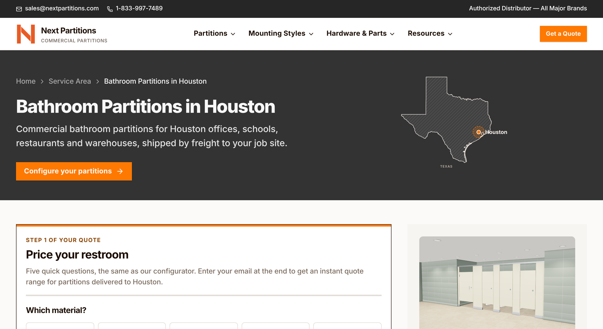
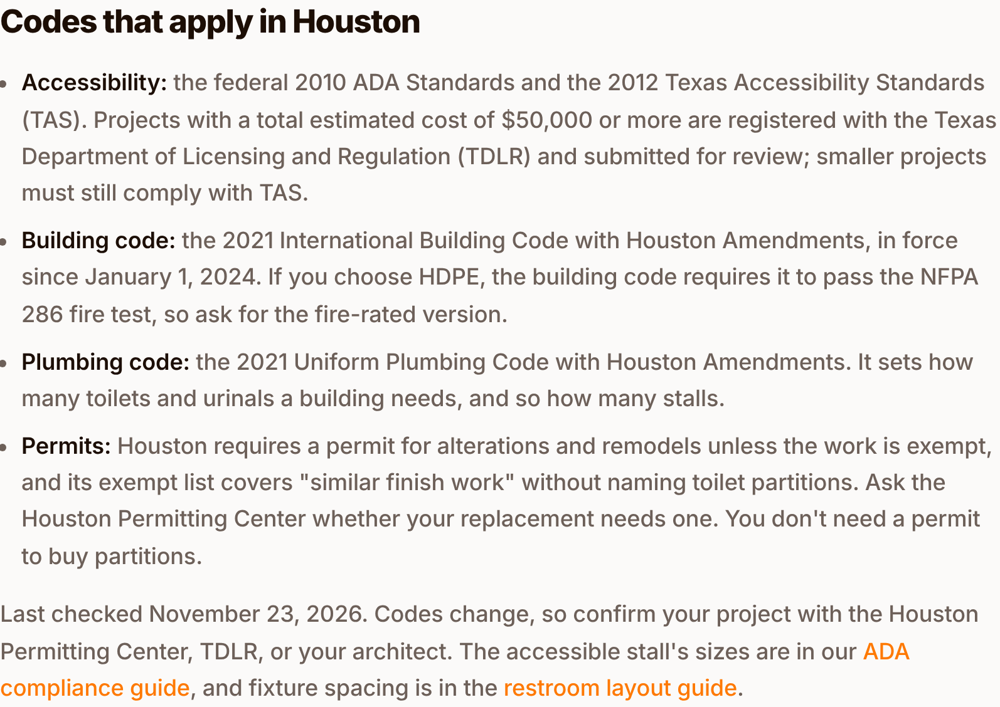

This week we researched partition installers in every state, designed the city pages ("Bathroom Partitions in Houston") and built the first one, and looked up the building codes those pages cite. On the live site nothing has changed since last week: the guide correction and the six blog posts still wait for Marc to publish them.
What we did this week
A list of partition installers across the country. We searched 133 metro areas in all 50 states and Washington, D.C. for businesses that install toilet partitions, and checked each one on its own website.
412 businesses are on the list, each with its city, website, phone number and what we found.
168 are strong candidates: they show partition installation for commercial customers.
43 of those only install and don't sell partitions themselves. We contact these first.
Most of the others are dealers that sell and install the same brands you sell. They can still take installation jobs, and the listing agreement keeps them from selling around you.
Nobody has been contacted yet.
The city pages: designed, and Houston built. Each city gets its own page for people who search "bathroom partitions" plus the city name. It opens with a map of the state and a short price questionnaire that leads into your quote request, and everything below it is specific to that city.

The top of the Houston page in the preview.
Price your restroom: five questions, then the visitor's email, then the price range. The email comes to you as a lead.
The right material for the city's climate, from government weather records.
Delivery to job sites in that city.
The codes that apply there, with a link to each official source and the date we checked it.
Installation, with a link to that city's installer page, plus nearby cities and the questions buyers there ask.

The codes section of the Houston page.
Building codes, looked up for every state. For all 50 states and Washington, D.C. we recorded the accessibility standard, the building code and the plumbing code now in force, and for Houston, Los Angeles, Miami, Dallas and Seattle the city's own codes as well. Several states changed their codes this year, so each page shows the date it was last checked.
State rules for installers, checked against the law. The pages that say who may install partitions in each state now rest on the official text for 40 of the 51. The other 11 need a phone call to the state office.
Open the preview (the Houston page is under "service-area/houston")
What we need from you
A decision on how the city pages go live. The plan so far was to publish a city only once it has 3 checked installers. We suggest publishing the city pages now, without naming installers. When a customer asks for installation, we invite two or three installers from our list to price that job, and an installer is listed on the site after a first job done well. Your pages start ranking months earlier. Do you agree?
"Authorized Distributor — All Major Brands." This line is at the top of every page of your site. Is it confirmed in writing for each brand: Bobrick, ASI, Scranton, Bradley, Metpar, Ammco and Hadrian? If not, we'll ask Marc to change the wording.
Your top cities. Where do most of your orders ship to? We build those city pages first. Without your list we start with Houston, Los Angeles, Miami, Dallas and Seattle.
Still open from last week: the seven short answers for the "expert advice" boxes, five to ten photos of finished jobs, and a list of past customers for review requests.
Coming next
Four more city pages: Los Angeles, Miami, Dallas and Seattle, or your top cities.
First contact with installers, starting with the 43 that only install, in your name.
The live site: Marc publishes the guide correction and switches on the six blog posts.
The price range in the questionnaire, once your prices are on the site.
The new pages go to Marc: last week's five pages, the rebuilt schools industry page and the city pages.
Installer and code research: November 19 to 23, 2026, from public sources. Pages in the preview are not live yet.